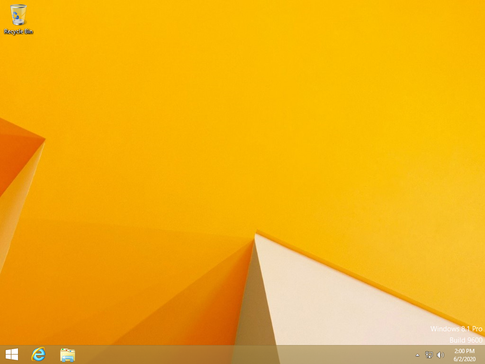

Windows 8.1... It is hated by some, loved by some. To me, it is the best operating system that was ever made by Microsoft (Linux is still better :D).
A lot of people ask, why would I love such a "terrible" operating system? The start screen is so unusual, the interface is flat, and it has full screen apps. I have heard that a lot before. But to me, go ahead, tell as much negative things about Windows 8.1, they are not true or not problematic to me.
Start screen is honestly, beautiful. It really stands out to me. A lot of people say that it is unusual, and it takes up the whole screen. However I have found it to be comfortable to use, and I do not look at the desktop when I use start menu. Honestly, it is one of the most comfortable menus that I have seen in any operating system. After using Linux for so long, it is really annoying to find a menu that is good to me. I have only liked GNOME's menu, it is really nice.

The interface is also beautiful to me. I am not a fan of flat interface, but Windows 8.1... Oh my god, it just stands out to other flat interfaces. The person who created Metro is just a genius to me, especially after looking at Mica and Acrylic. It is just beautiful. The mix of flatness and skeuomorphism in Windows 8.1, is just beautiful. I really wish that they kept using the design.
{kind=link}
But Windows 8.1 is not only good because of interface. Under the hood it is also better than Windows 7 and 10. Windows 8.1 supports newer USB 3.x controllers out of the box, therefore I don't have to modify my Windows 8.1 ISO to work on my laptop, and many other newer devices.
Windows 8.1 also supports Class 3 UEFI, which means it can boot on devices which don't support Compatibility Support Module. UefiSeven does exist, but it does not work for everybody and it's still a pain in the ass compared to Windows 8.1.
Speed is also so good in Windows 8.1, in some cases it feels faster than Windosw 7 does on the same hardware. Even on a really customized version of Windows 8.1 that I am using.
And if you are still mad at the start screen or the interface, just use Open-Shell and a custom theme like I do on Windows 8.1, because this theme is just so good. ;)